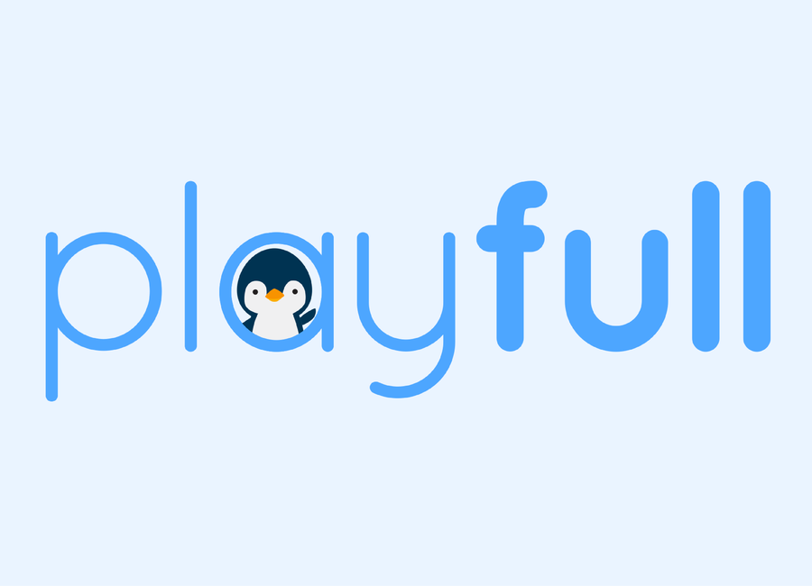
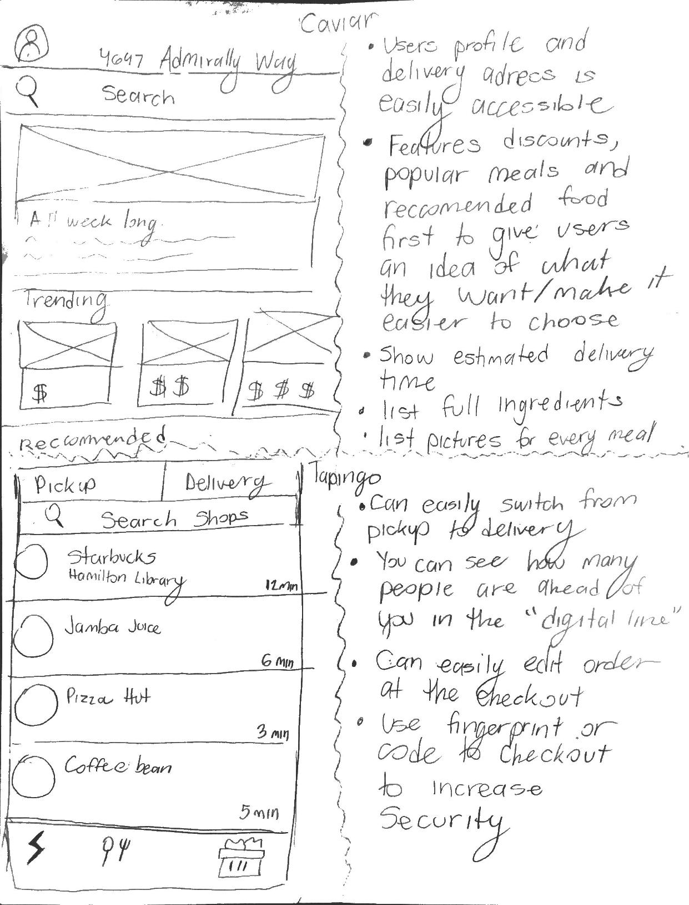
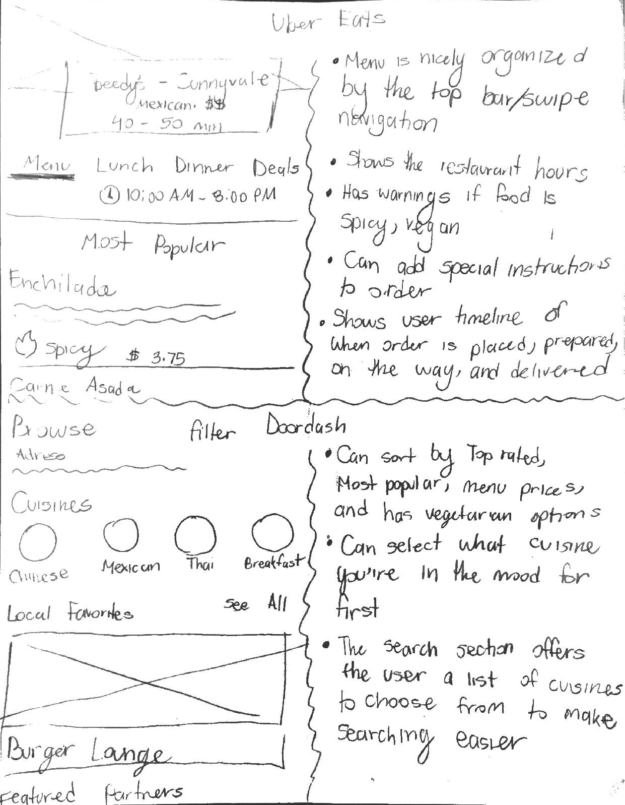
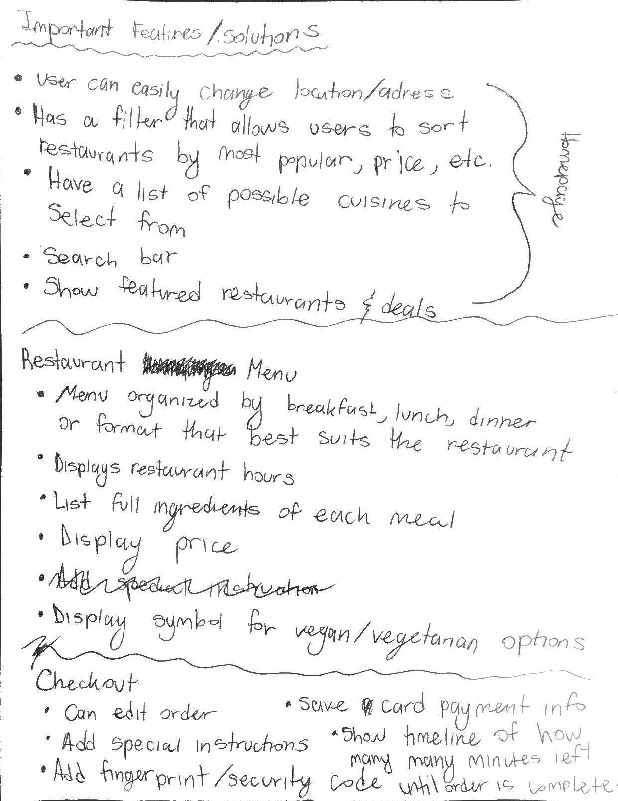
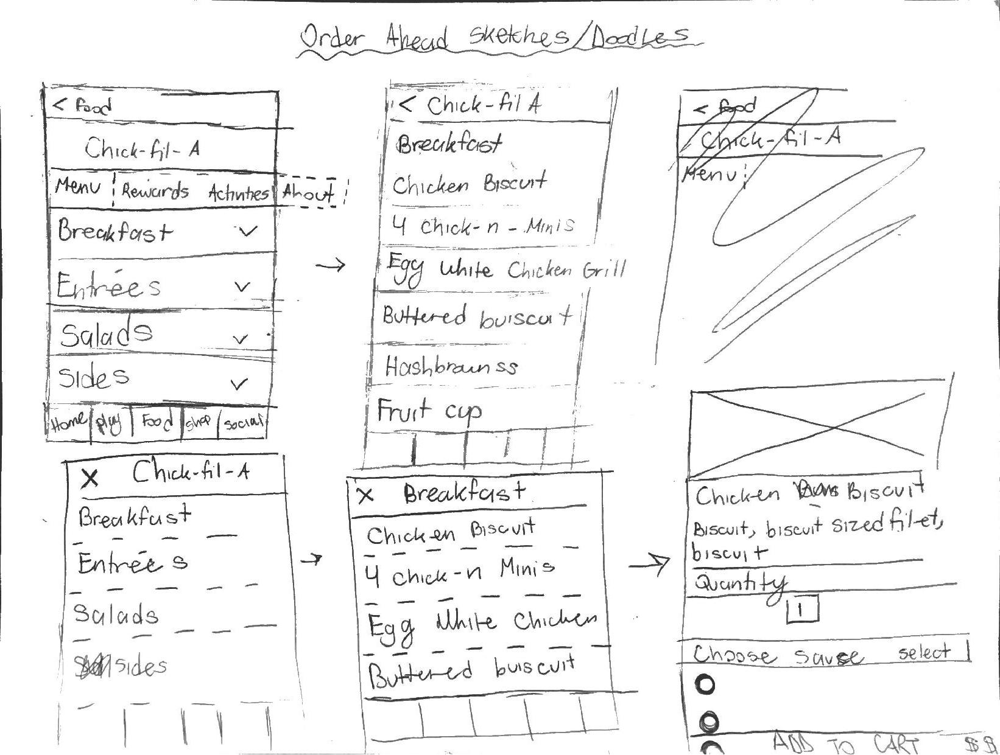

PlayFull Case Study

Company Info
Playfull is a mobile app that allows users to play games, earn points, and use to points to get free food at their partner restaurants including Chick-Fil-A, Subway, Denny’s, and more. Simultaneously, PlayFull helps restaurants retain customers through games.
Task
Design an order ahead feature for the PlayFull app
Problem
PlayFull has two users; the ones looking for discounted food at restaurants, and restaurants looking for more customers. The biggest complaints from users was that there not enough restaurants on the app. Playfull’s partnered restaurants are limited to UCLA, preventing users from being able to redeem their rewards outside of the UCLA area. The process of adding additional restaurants to the app was a lengthy process. The company would spends months trying to establish a relationship with each restaurant for the chance that they would agree to partner with Playfull, and usually that partnership would not form. The limited partnered restaurants that were on the app and the rate each partnership formed, was not enough to satisfy users nor satisfy the company’s goal of efficiently expanding outside of UCLA.
The biggest issue with restaurants was that they had difficulty using the PlayPad, which is a customer-facing tablet next to the restaurants POS that ensures secured transactions. It required employees to be trained to learn how to use it and it would frequently power off without restaurants knowing how to turn it on, requiring repeated maintenance.
LevelUp, an order ahead service that expressed interest in integrating their API into the PlayFull app, allowing users order food from their phone instead of in person, which theoretically should cause an increase in revenue for restaurants. In addition, Playfull would receive access to LevelUp’s restaurant network, giving users a greater selection of stores to order from. In order for the partnership to be a success, PlayFull would need to design an order ahead feature within the app.
Tools
Sketch
Process
Observations
I started off by researching popular order ahead apps. I drew out the app screens that I thought were successful on the right and wrote down a list of features for each app that I thought were successful on the left.
Noteworthy order ahead app features:

Caviar
Users profile and delivery address are easily accessible
Features discounts, popular meals, and recommend food to give users an idea of what's available to them and easier to make food selections
Shows estimated delivery time
List full ingredients for each menu item
List pictures for each menu item
Tapingo
Can easily switch from pickup to delivery
Can see how many people are ahead of you in the “digital line”
Must use fingerprint or code to complete order
Can easily edit order at checkout

Uber Eats
Restaurant page is nicely organized the top sliding navigation bar
Lists restaurant hours
Lists warnings if a menu item is spicy, vegan, etc.
Users can write special instructions for their order
Shows users a timeline of when their order is placed, prepared, and out for delivery
Doordash
Can easily switch from pickup to delivery
Can see how many people are ahead of you in the “digital line”
Must use fingerprint or code to complete order
Can easily edit order at checkout
From there I wrote a list of features I thought would be important to include in Playfull’s order ahead feature that would make it a positive experience for users.

Sketching Ideas
I started to sketch out some ideas for designing the order ahead feature based off my research.

Lo-fi Sketches
Once I had a general sense of what I wanted the order ahead feature to look like, I created a set of lo-fi sketches and detailed information about how each screen would function.
Lo-fi sketches link
Hi-fi Sketches
Usability Testing
I went to UCLA's campus and asked students for the opinion on the app.
Here are some of the questions I asked:
Let’s imagine you’ve just opened up the app. What do you think you can do from this screen?
How well did the order ahead feature meet your needs?
Imaging that you were free to roam, how likely would you be to explore different sections of the app? Why?
If you could change 1 thing about this feature, what would those be?
Analyzing Feedback
I made a user testing summary report to outline the main responses I received from users. I learned that overall, users enjoyed the ordering experience, but they prefered if the open and close icons were removed. As a result, I came up with the idea to have open restuarants featured at the top of the page, while closed restuarants were at the bottom of the page and grayed out to indicate that it wasn't open.
New Iteration
I concluded that next and momentarily final iteration of the feature would satisfy the users needs to placing an order. Here's the final prototype: